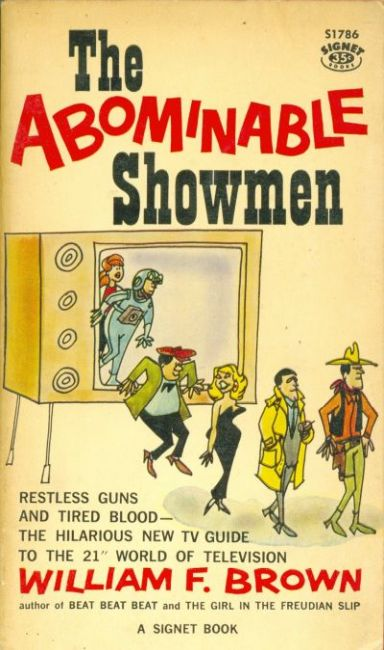

The New American Library (NAL) is an American publisher based in New York, founded in 1948. Its initial focus was affordable paperback reprints of classics and scholarly works as well as popular and pulp fiction, but it now publishes trade and hardcover titles. It and it's imprints Signet, are currently imprints of Penguin Random House.
Comic Titles
Abominable Showmen 1960
Agatha Crumm 1980
Agatha Crumm: Too Much Is Never Enough 1982
Al Jaffee Blows a Fuse 1980
Al Jaffee Blows His Mind 1975
Al Jaffee Bombs Again 1978
Al Jaffee Dead Or Alive 1980
Al Jaffee Draws a Crowd 1978
Al Jaffee Fowls His Nest 1981
Al Jaffee Gags 1974
Al Jaffee Gags Again 1975
Al Jaffee Gets His Just Desserts 1980
Al Jaffee Goes Bananas 1982
Al Jaffee Hogs the Show 1981
Al Jaffee Meets His End 1979
Al Jaffee Meets Willie Weirdie 1981
Al Jaffee Rotten Rhymes and Other Crimes 1978
Al Jaffee Shoots His Mouth Off 1982
Al Jaffee Sinks to a New Low 1978
Al Jaffee's Next Book 1977
Am I Too Heavy, Dear? 1969
Anthem 2011
Batman 1966
Batman vs. the Joker 1966
Batman vs. the Penguin 1966
Blondie 1968 2 issues (0 indexed) Gallery October 1968 - October 1968
Boiling Mad 1966 2 issues (0 indexed) Gallery October 1966 - ?
Boy, Girl, Boy, Girl 1963 1 issues (0 indexed) Add 1963
Burning Mad 1968 1 issues (0 indexed) Gallery October 1968
Creepshow 1982
Don Martin Bounces Back 1963 1 issues (0 indexed) Gallery May 1963
Don Martin Drops 13 Stories! 1965 2 issues (0 indexed) Have 1 (Need 1) July 1965 - February 1971
Don Martin Steps Out! 1962 3 issues (3 indexed) Gallery April 1962 - c 1971
Explainers 1964 1 issues (0 indexed) Have 1 (Need 1) 1964
Fighting Mad 1961 3 issues (0 indexed) Have 3 (Need 1) August 1961 - circa 1968
Good 'n' Mad 1969 3 issues (0 indexed) Have 2 (Need 1) April 1969 - circa 1973
Greasy Mad Stuff 1963 2 issues (0 indexed) Gallery October 1963 - circa 1968
Herblock on All Fronts 1980 1 issues (0 indexed) Gallery 1980
Herman: "And you wonder, Herman, why I never want to go to Italian restaurants!" 1983 1 issues (0 indexed) Add November 1983
Herman: "It's Called 'Midnight Surrender,' Herman" 1986 1 issues (1 indexed) Gallery September 1986
Hopping Mad 1969 2 issues (1 indexed) Gallery October 1969 - October 1969
Howling Mad 1967 2 issues (1 indexed) Gallery October 1967 - circa 1968
Laugh-In 1969 2 issues (1 indexed) Gallery February 1969 - February 1969
Mad: Like, Mad 1960 4 issues (2 indexed) Gallery September 1960 - circa 1970
Lockhorns "What's the Garbage Doing on the Stove?" 1975 1 issues (0 indexed) Gallery February 1975
Love Is... 1971 1 issues (1 indexed) Gallery May 1971
Mad About Mad 1970 3 issues (1 indexed) Have 1 (Need 2) July 1970 - circa 1974
Mad Adventures of Captain Klutz 1967 1 issues (1 indexed) Gallery January 1967
Mad Book of Magic and Other Dirty Tricks 1970 1 issues (0 indexed) Gallery February 1970
Mad for Better or Verse 1968 1 issues (0 indexed) Gallery November 1968
Mad Frontier 1962 3 issues (0 indexed) Have 2 (Need 1) February 1962 - 1970 ?
Mad in Orbit 1966 2 issues (0 indexed) Gallery August 1962 - ?
Mad Look at Old Movies 1966 3 issues (2 indexed) Have 3 (Need 2) November 1966 - 1966
Mad Power 1970 1 issues (0 indexed) Gallery October 1970
Mad Sampler 1965 2 issues (1 indexed) Gallery April 1965 - 1965
Mad's Al Jaffee Spews Out More Snappy Answers to Stupid Questions 1972 1 issues (0 indexed) Gallery February 1972
Mad's Al Jaffee Spews Out Snappy Answers to Stupid Questions 1968 3 issues (1 indexed) Gallery February 1968 - [circa 1973]
Mad's Dave Berg Looks at Modern Thinking 1969 3 issues (0 indexed) Have 2 (Need 1) November 1969 - circa 1973
Mad's Dave Berg Looks at Our Sick World 1971 1 issues (0 indexed) Gallery November 1971
Mad's Dave Berg Looks at People 1966 3 issues (1 indexed) Have 2 (Need 1) February 1966 - circa 1971
Mad's Dave Berg Looks at the U.S.A. 1964 2 issues (0 indexed) Have 1 (Need 1) January 1964 - 1964
Mad's Dave Berg Looks at Things 1967 3 issues (2 indexed) Have 2 (Need 1) November 1967 - circa 1970
Mad's Don Martin Comes On Strong 1971 1 issues (1 indexed) Gallery 1971
Mad's Don Martin Cooks Up More Tales 1969 2 issues (1 indexed) Gallery July 1969 - 1969
Mad's Spy vs Spy 1965 1 issues (1 indexed) Gallery November 1965
Mad's Spy vs. Spy 1966 1 issues (0 indexed) Gallery April 1968
Mad: The Ides of Mad 1961 3 issues (0 indexed) Gallery March 1961 - circa 1968
Mad: The Indigestible Mad 1968 1 issues (0 indexed) Gallery March 1968
Mad: It's a World, World, World, World Mad 1965 2 issues (0 indexed) Gallery October 1965 - circa 1965
Mad: The Bedside Mad 1959
Mad: MADvertising or Up Madison Avenue 1972 2 issues (0 indexed) Gallery July 1972 - July 1972
Mad: Three Ring Mad 1964 3 issues (1 indexed) Have 2 (Need 1) March 1964 - [circa 1970]
Mad: Viva MAD! 1968 1 issues (1 indexed) Gallery July 1968
Mad: The Voodoo Mad 1963 4 issues (1 indexed) Have 3 (Need 1) March 1963 - circa 1973
Mad: The Portable Mad 1970 2 issues (0 indexed) Gallery April 1970 - April 1970
Mad: The Questionable Mad 1967 3 issues (2 indexed) Have 3 (Need 1) April 1967 - 1974 ?
Mad: Raving Mad 1966 2 issues (0 indexed) Gallery April 1966 - circa 1966
Mad: The Return of a Mad Look at Old Movies 1970 1 issues (1 indexed) Gallery March 1970
Mad: The Organization Mad 1960 3 issues (1 indexed) Gallery April 1960 - circa 1968
Mad: The Self-Made Mad 1964 3 issues (1 indexed) Have 2 (Need 1) October 1964 - circa 1971
Mad: Sing Along With Mad 1970 1 issues (1 indexed) Have 1 (Need 1) November 1970
Mad: Son of Mad 1959 3 issues (1 indexed) Gallery October 1959 - circa 1970
My Friend God 1972 1 issues (1 indexed) Gallery October 1972
Passionella and Other Stories 1964 1 issues (1 indexed) Add November 1964
Ripley's Believe It or Not 1982 4 issues (0 indexed) Have 3 (Need 1) 1982 - 1982 ?
Scroogie 1976 1 issues (0 indexed) Gallery April 1976
Scroogie Hello There, Ball! 1977 1 issues (0 indexed) Have 1 (Need 1) April 1977
Sick, Sick, Sick 1963 1 issues (1 indexed) Gallery February 1963
Superfan 1972 1 issues (1 indexed) Gallery August 1972
Superfan...Again! 1974 1 issues (0 indexed) Have 1 (Need 1) August 1974
Superman 1966 1 issues (1 indexed) Gallery May 1966
Tales of the Green Berets 1966 1 issues (0 indexed) Gallery September 1966
Wee Pals: 1969 2 issues (0 indexed) Have 1 (Need 1) September 1969 - circa April 1972
Wee Pals: Doing Their Thing 1973 1 issues (0 indexed) Add August 1973
Wee Pals: Rainbow Power 1973 1 issues (1 indexed) Add February 1973
Wee Pals: Staying Cool 1974 1 issues (1 indexed) Gallery September 1974
Wee Pals: Book of Knowledge 1974 1 issues (0 indexed) Have 1 (Need 1) February 1974
Wee Pals: Getting It All Together 1972 1 issues (0 indexed) Gallery January 1972
Wee Pals: God Is Groovy! 1972 1 issues (0 indexed) Gallery June 1972
Wee Pals: Happy Birthday, America! 1975 1 issues (1 indexed) Gallery March 1975
Wee Pals: Nipper & Nipper's Secret Power 1974 1 issues (0 indexed) Add 1974
Wee Pals: Right On! 1971 1 issues (0 indexed) Gallery March 1971
Ziggy: This Book Is for the Birds [Ziggy] 1980 2 issues (0 indexed) Add February 1980 - [circa 1985]
Ziggy: Ziggy & Friends 1983 1 issues (0 indexed) Have 1 (Need 1) April 1983
Ziggy: Ziggy Faces Life 1982 1 issues (0 indexed) Add March 1982
Ziggy: Ziggy Faces Life... Again! 1982 3 issues (0 indexed) Have 1 (Need 2) September 1982 - 1982
Ziggy: Ziggy Weighs In 1984 1 issues (0 indexed) Add September 1984
Ziggy: Pets Are Friends You Like Who Like You Right Back [Ziggy] 1978 2 issues (0 indexed) Add September 1978 - [circa 1984]
Ziggy: Plants Are Some of My Favorite People! [Ziggy] 1978 1 issues (0 indexed) Add May 1978
Ziggy: Never Get Too Personally Involved with Your Own Life [Ziggy] 1977 2 issues (0 indexed) Add January 1977 - [circa 1980]
Ziggy: Ziggy's High Hopes 1985 1 issues (0 indexed) Add October 1985
Ziggy: Ziggy's Ins and Outs 1985 1 issues (0 indexed) Add April 1985
Ziggy: It's a Ziggy World 1975 4 issues (0 indexed) Add December 1975 - [circa 1984]
Ziggy: Life Is Just a Bunch of Ziggys 1975
Ziggy: Ziggy's Ship Comes In 1984 1 issues (0 indexed) Add April 1984
Ziggy: Ziggys of the World Unite! 1977 1 issues (0 indexed) Add December 1977

{kind=link}
{kind=link}
{kind=link}
{kind=link}
{kind=link}